Two lists for Mark (2 years 4 months, Montessori class, Russian and English at home). Prices checked live on Oct 25, 2026.
Real materials and real work for home, ordered by how much each adds for him next to his Montessori class.
Already in the first list (Montessori favorites, not repeated): Learning Tower, Pikler triangle, lacing beads, Helping Hands transfer tools, the Lovevery kit's scale and squeegee.
Next to his class: 1–11 are real work at home, where home matters most. His class will present the classic materials (cylinders, color tablets, fabric box, sandpaper letters and numbers, puzzle maps) around 3, and a toddler teacher writing for AMS says primary teachers ask that they not start earlier. So the fabric box and sandpaper numbers are left out, and 17–20 say "ask his teacher first".
How to set it out: one activity per tray on a low shelf, show it slowly with few words, then let him repeat. Real glass and real tools mean a grown-up nearby.
1
Montessori Services food prep set: crinkle chopper, bamboo board, nylon knives
Practical life · food prep · ages 4+ 4+ label
$20.40 · montessoriservices.com
Cutting his own banana, cucumber or apple for snack is the core Montessori work at his age, and a real kitchen does it better than any classroom. Goes with the Learning Tower from the first list: he cuts at the counter, then washes up and puts things back. AMI, Aid to Life
Three pieces, bought separately: chopper $4.95, small bamboo board $5.50, 3 nylon knives $9.95. The 4+ label is the maker's; Montessori toddler rooms cut soft food with tools like these from about 2, with a grown-up next to him.
2
Montessori Services 8 oz porcelain pitcher + Durable Juice Glass Set (6)
Practical life · pouring · ages 3+ (glasses) 3+ label
$26.90 · montessoriservices.com
A small real pitcher and real glasses, so he pours his own water at every meal. Real glass teaches care: if it spills he wipes it, and he learns to carry it with two hands. AMI, Aid to Life
Pitcher $6.95 + tempered glasses $19.95 (fill to 5 oz). Smaller: 4 oz pitcher $3.95.
3
Camden Rose Child's Play Cleaning Set (broom, dustpan, mop, stand)
Practical life · care of home · ages child size fits now
$95.99 · camdenrose.com
A real broom, dustpan and mop that actually clean, on his own stand, so when the water spills he gets the mop himself. Sweeping and mopping with the family is how toddlers start to feel part of the house. AMI, Aid to Life
Broom and mop are about 37 in, made to last to 8: he'll hold them lower at first. No age label. Cheaper, no mop: corn broom $12.95 + OXO brush and dustpan $11.95.
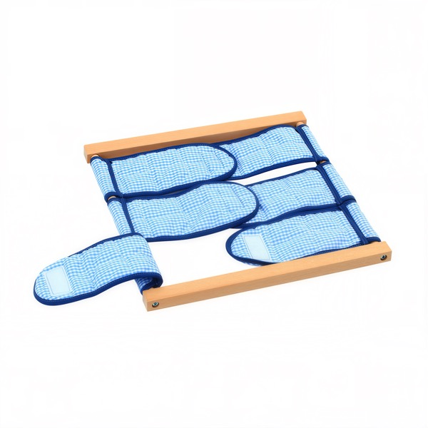
4
Montessori Outlet toddler dressing frames: 3 big buttons, large zipper, Velcro
Practical life · dressing · ages 0–3 fits now
$56.85 · montessorioutlet.com
Practice the hard parts of getting dressed at a table, before doing them on his own jacket at the door. Montessori teachers start zipping and buttoning at 2½–3. NAMC teacher training
$18.95 each, bought separately: buttons (link above), zipper, Velcro. Cheaper: Educo set of 3 $39.95. At home the real test is his own coat on a low hook.
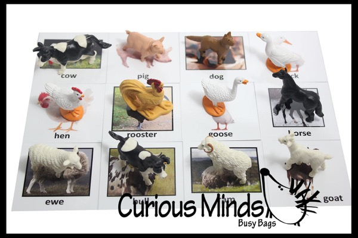
5
Curious Minds Busy Bags Animal Match: Farm (12 animals + 12 photo cards)
Language · words · ages 3+ 3+ label
$31.00 · curiousmindsbusybags.com
Real-looking animals to match to their photos and name, the toddler language work from his class. At home do it in Russian: AMI's advice for bilingual toddlers is that each adult keeps to their own language, so the cow is корова with you and cow at school. AMI, bilingual child
3+ label: small parts. Cheaper: Safari Ltd Farm TOOB $14.99 and print your own photo cards.
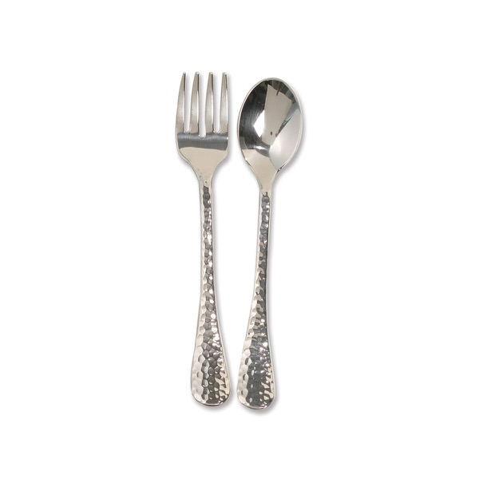
6
Montessori Services toddler stainless flatware + 7.5" glass plate
Practical life · table · ages 1–3 fits now
$16.45 · montessoriservices.com
His own real spoon, fork and plate, the same kind as yours, so he sets his place and clears it himself. The glass comes from the pouring set. NAMC teacher training
Spoon and fork $9.95 + glass plate $6.50.
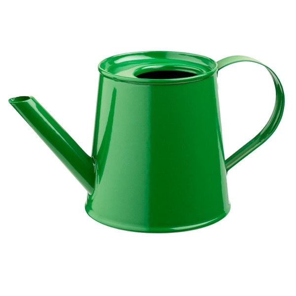
7
Montessori Services Toddler Watering Can (steel)
Practical life · plants · ages toddler fits now
$6.35 · montessoriservices.com
A small steel can with an open top he fills himself, and one house plant that is his job. A toddler teacher writing for AMS calls real work like this "totally engaging" at his age. AMS, Montessori Life 2023
No age label. For outdoor plants: Kids Watering Can $14.50 (3+).
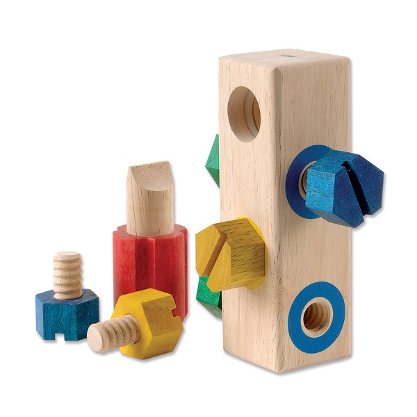
8
Guidecraft Bolt Block (6 wooden bolts + screwdriver)
Fine motor · twisting · ages 2–5 fits now
$23.95 · montessoriservices.com
Chunky wooden bolts to twist in and out by hand, then with a big wooden screwdriver. Twisting work is on AMS's core list for toddlers and preschoolers, and the screwdriver keeps it hard enough for a while. AMS core materials list
The classroom classic, Nienhuis Bolts and Pegs ($58.85), is labeled 18–30 months, so he's at the top of it.
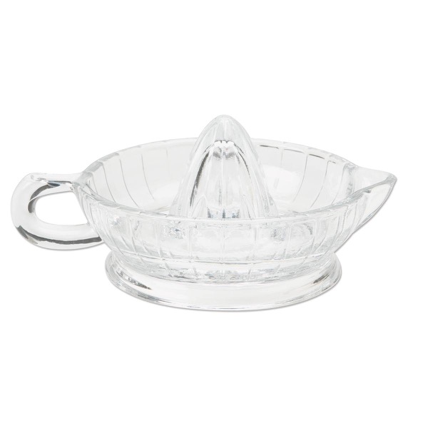
9
Montessori Services Glass Citrus Juicer
Practical life · food prep · ages 4+ 4+ label
$11.95 · montessoriservices.com
Squeeze his own orange and pour the juice into his own glass: hand strength, both hands working together, and a drink he made. AMS, practical life at home
4+ label is the maker's. Cut the orange for him; thick glass, hand wash.
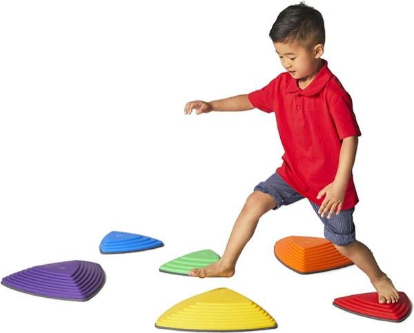
10
GONGE River Stones (6)
Gross motor · balance · ages 2+ (Amazon: 3+) fits now
$71.99 · Amazon
Six non-slip stones to step across like a river: balance, slow careful steps, knowing where his feet are. The Montessori version is walking on a line or a low beam; this brings it home. Different from the Pikler triangle in the first list, which is climbing. NAMC teacher training
Not a classic Montessori material, the home version of its balance work. Gonge labels it 2+, Amazon 3+. 9 left on Amazon today.
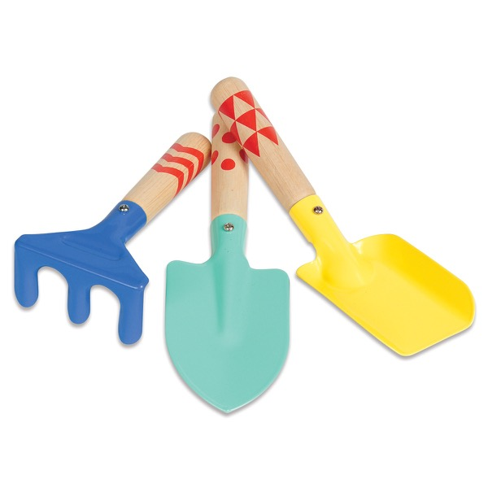
11
Toysmith Kids' Garden Hand Tools (trowel, rake, spade)
Nature · gardening · ages 3+ 3+ label
$14.50 · montessoriservices.com
Real metal tools for a pot on the balcony or a bed in the yard: dig, plant seeds, water them with his can. Gardening builds hand control and new words, and shows cause and effect. AMS, gardening with preschoolers
3+ label: small parts and edges, a grown-up nearby. Long-handled set: Primary Garden Tools $42 (3–5).
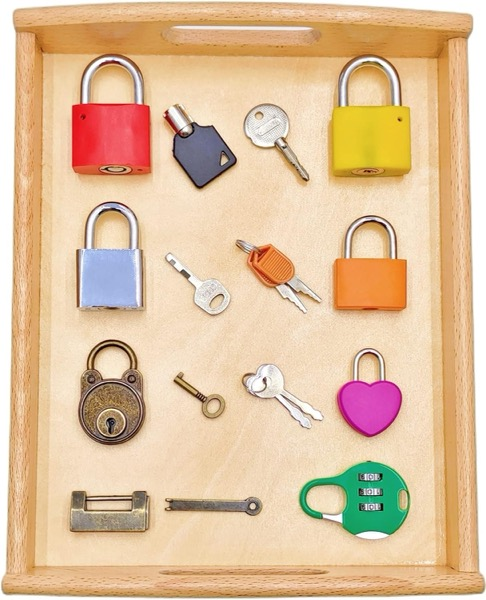
12
MIKNEKE Montessori Lock and Key Set (8 padlocks)
Fine motor · problem solving · ages 3–10 3+ label
$25.99 · Amazon
Eight real padlocks, each with its own key: he works out which key fits and sees his own mistakes. Hand strength, patience, concentration. It isn't standard in classrooms, so it stays new at home. Global Montessori Network
3+ label: small keys, play with a grown-up. No loose parts: Melissa & Doug Locks and Latches Board $24.99 (3–5).
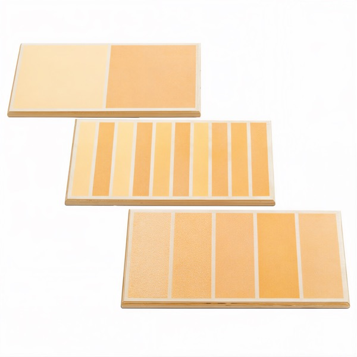
13
Montessori Outlet Rough and Smooth Boards (3)
Sensorial · touch · ages 3–6 3+ label
$16.95 · montessorioutlet.com
Three sandpaper boards from rough to smooth, felt with the fingertips, later with eyes closed. Rough and smooth is on AMS's toddler list, the step before the fabric box his class will bring out at 3. AMS toddler core list
Maker says 3–6; no small parts.
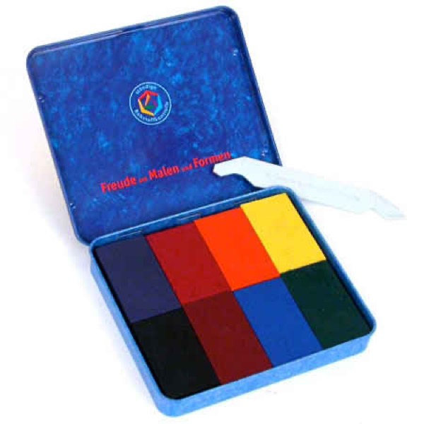
14
Stockmar Wax Block Crayons (8 blocks in a tin)
Art · hand · ages 3+ 3+ label
$20.80 · The Wooden Wagon
Chunky beeswax blocks he holds with his whole hand now and on the edge for thin lines later. Crayons, painting and drawing are on AMS's core toddler list; art is the part of the day home can give him every day. AMS toddler core list
Made in Germany, pure beeswax. Pair with big sheets of paper taped to the table.
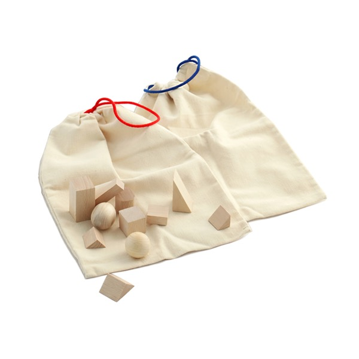
15
Montessori Outlet Mystery Bag (geometric shapes)
Sensorial · touch, words · ages 3–6 3+ label
$16.95 · montessorioutlet.com
Reach into the bag, feel a shape and find its twin without looking. It's on the toddler list too; at home also fill it with things from the house and name them in Russian. NAMC teacher training
Solids are small (2–4 cm): with a grown-up. Easier start: Familiar Items bag $11.95.
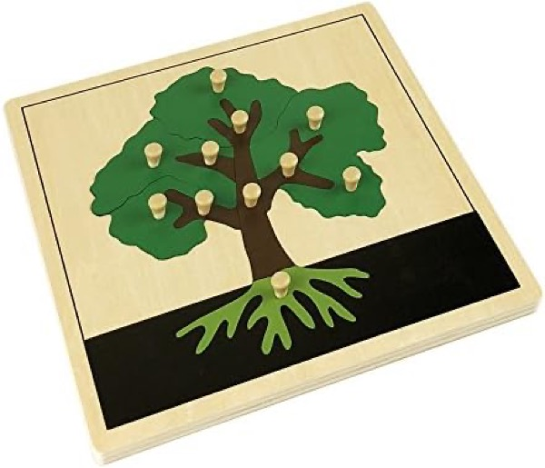
16
Elite Montessori Tree Puzzle
Nature · botany · ages 3+ 3+ label
$13.99 · Amazon
A knobbed wooden tree: leaves, trunk and roots as pieces. The knobs train the pincer grip, and on walks he names the parts he built. Alison's Montessori (maker)
About 10 pieces, a stretch now. Leaf, flower and tree together: Adena Botany Puzzle Cabinet $47.98.
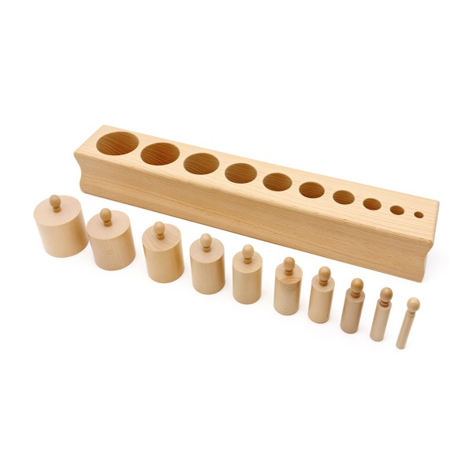
17
Montessori Outlet Cylinder Block 1 (knobbed cylinders)
Sensorial · size · ages 3–6 3+ label
$39.95 · montessorioutlet.com
The first Montessori sensorial material: ten knobbed cylinders, each fits only its own hole. Montessori said it draws children from 2½–3, and the knobs train the grip used for a pencil. AMS, Montessori Life 2023
Ask his teacher first: his class will present this around 3, and a toddler teacher writing for AMS sees children who met it early say "I've done that" without really using it. Set of 4 blocks: Adena $147.20.
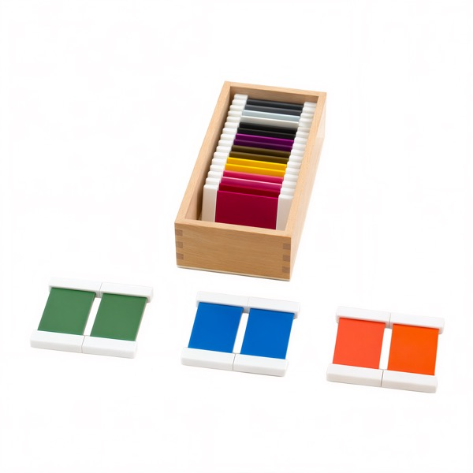
18
Montessori Outlet Color Tablets, Box 2 (11 pairs)
Sensorial · color · ages 3–6 3+ label
$24.95 · montessorioutlet.com
Match pairs of colors, and learn the color words in both languages. Start with three pairs (red, yellow, blue), add more as he gets them. Global Montessori Network
Ask his teacher first: a class material he'll likely get around 3 (see the cylinders note).
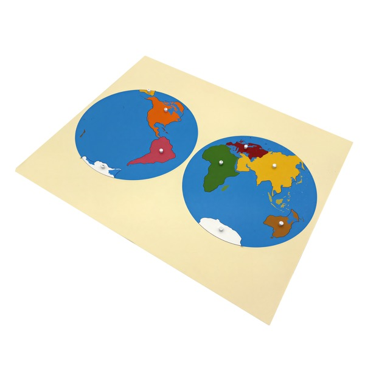
19
Montessori Outlet Puzzle Map of World Parts
Culture · geography · ages 3+ 3+ label
$39.95 · montessorioutlet.com
The classic knobbed world map: each continent a puzzle piece, then which animals live where (and where бабушка lives). A stretch: classes use it from about 3–4. NAMC teacher training
3+ label: small parts. A class material too, so ask his teacher. Toy version, no knobs: Montessori Mama World Map puzzle $19.99 (4–6).
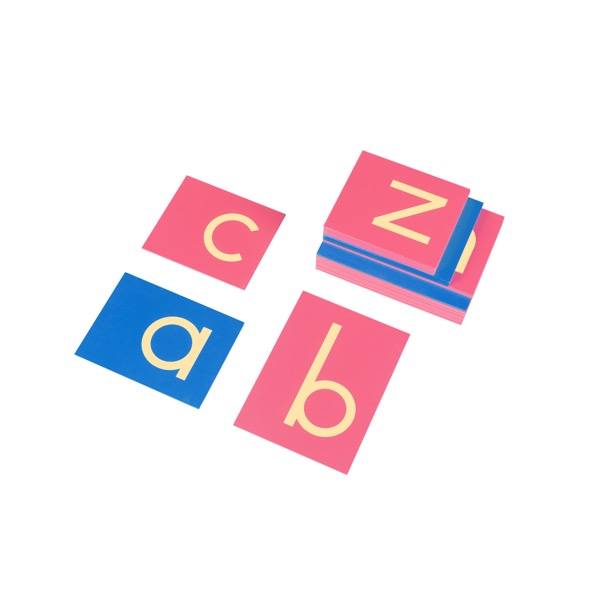
20
Montessori Outlet Lowercase Sandpaper Letters (print)
Language · letters · ages 3+ 3+ label
$31.95 · montessorioutlet.com
He traces a letter with two fingers while saying its sound. It comes after sound games ("I spy something that starts with mmm"), which you can start now in both languages. AMI, on reading
His class will do English letters from 3, so the home win is Russian: no ready-made Cyrillic set is sold in the US, but a printable template ($8.19, Etsy) plus sandpaper makes one. 3+ label: small parts.
20 picks for brain development, ordered by how much each adds for him (2 years 4 months, Montessori class, Russian and English at home). Prices checked live on Oct 25, 2026.
1
Magna-Tiles Classic 32-Piece Set
Building · spatial · ages 3+ 3+ label
$49.99 · magnatiles.com
The most open-ended toy here: flat shapes and simple walls now, towers, houses and garages for years. 3-year-olds who build and copy structures well also do better at early math. Verdine 2014
3+ label: small parts and magnets, sealed in the tiles. Check for cracked tiles.
2
Toniebox Lite My Story Set (with a Creative-Tonie)
Language · Russian · ages 1+ fits now
$79.99 · tonies.com
His class is in English, so Russian needs help. Grandparents record stories and songs into the tonies app from their phones; he plays them by putting the figure on the box, no screen. How much a 2-year-old hears each language, and from how many native speakers, predicts his words in it. Place & Hoff 2011
No Russian Tonies are sold in the US, so it's your own recordings (90 min per figure). Extra Creative-Tonie $9.99, one per grandparent (3+ label).
3
HABA First Orchard
Self-control · social · ages 2+ fits now
$29.99 · habausa.com
His first game with rules, made for exactly his age: roll the color, pick the fruit, wait your turn, and everyone wins or loses together against the raven. Turn-taking and waiting games are what Harvard's child development center suggests at 18–36 months to build self-control. Harvard Center on the Developing Child
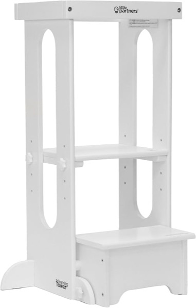
4
Little Partners Explore 'N Store Learning Tower
Independence · practical life · ages 2+ fits now
$159.99 · Amazon
Puts him at counter height to wash vegetables, stir and pour next to you: the Montessori practical life work from his class, at home. Toddlers love real work, and it teaches focus and cooperation. Zero to Three
Cheaper: COSYLAND Toddler Standing Tower, $67.49 on Amazon.
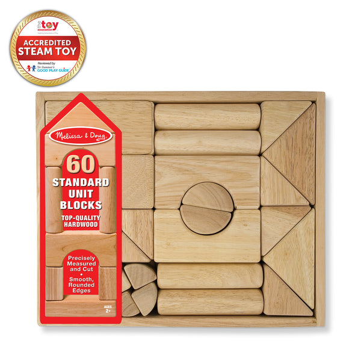
5
Melissa & Doug Standard Unit Blocks (60 pieces)
Building · early math · ages 2+ fits now
$68.97 · Amazon
The wooden unit blocks preschool classrooms use: every block is 1, 2 or 4 units, so he feels halves and doubles before he has the words. Kids with more advanced block building at 4 did better at math in middle and high school. Wolfgang 2001 (small study)
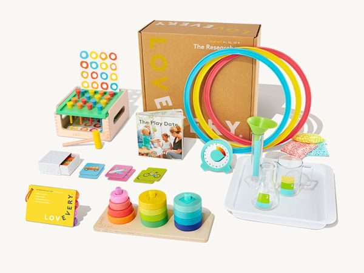
6
Lovevery The Enthusiast Play Kit (28–30 months)
Mixed: weight, sorting, feelings · ages 28–30 mo fits now
$156 · lovevery.com
Made for the months he's in now: a balance scale with pails, a sort-and-stack peg puzzle, a picnic set, a squeegee and an emotion mirror with cards. The pediatricians' advice on toys is simple, hands-on toys a parent plays with too, and this is that in one box. AAP, Healey 2019
$132 on subscription. The next kit, The Researcher (31–33 months), fits from late January.
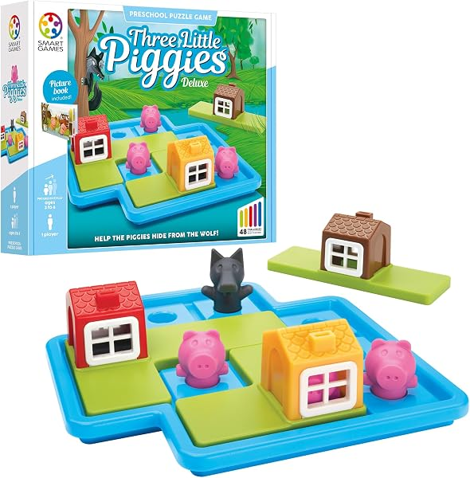
7
SmartGames Three Little Piggies Deluxe
Logic · problem solving · ages 3–6 3+ label
$26.99 · Maziply Toys
The stretch pick for "he's pretty smart": 48 challenges from very easy to hard, placing the houses so the pigs are safe from the wolf. Start together on the first pages; it grows with him to 5–6. Levine 2012
Not sold by Amazon itself right now.
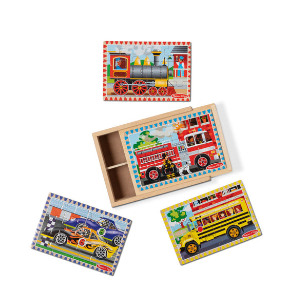
8
Melissa & Doug Wooden Jigsaw Puzzles in a Box – Vehicles
Spatial reasoning · ages 3+ 3+ label
$10.99 · melissaanddoug.com
Four 12-piece wooden puzzles, a step up from knob puzzles. Toddlers who did more puzzles at 2–4 were better at turning shapes in their heads at 4½. Levine 2012
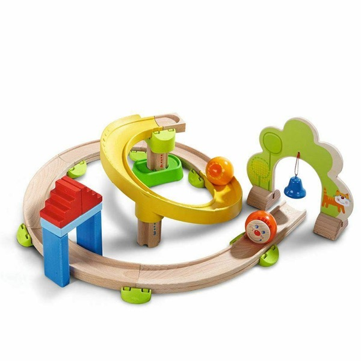
9
HABA Kullerbü Spiral 26-Piece Starter Track Set
Cause and effect · ages 2+ fits now
$99.99 · habausa.com
He builds the track, drops a ball and sees what changes when he moves a piece: cause and effect, planning, early physics. Preschoolers use play like experiments to work out what causes what. Schulz & Bonawitz 2007
Balls are 1¾ in, too big to swallow.
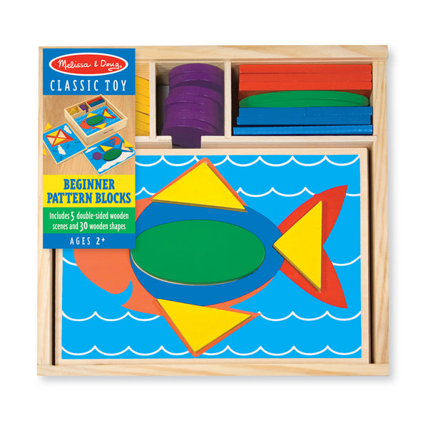
10
Melissa & Doug Beginner Pattern Blocks
Shapes · patterns · ages 2+ fits now
$30.99 · melissaanddoug.com
30 chunky wooden shapes and 5 picture boards: matching, turning shapes until they fit, seeing two triangles make a square. Same skill as the block-copying study above. Verdine 2014
The 120-piece Pattern Blocks and Boards ($16.14, Amazon) is the next step at 3.
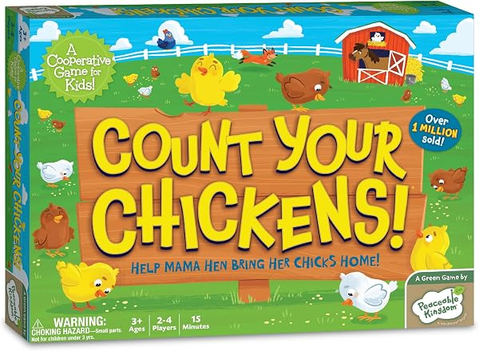
11
Peaceable Kingdom Count Your Chickens
Counting · turns · ages 3+ 3+ label
$15.99 · Amazon
A cooperative game: spin, count the squares to the next animal, bring that many chicks home before the fox. Simple number board games boosted 4–5-year-olds' sense of numbers; at 2 it's counting and taking turns. Siegler & Ramani 2008
3+ label: 40 small chicks.
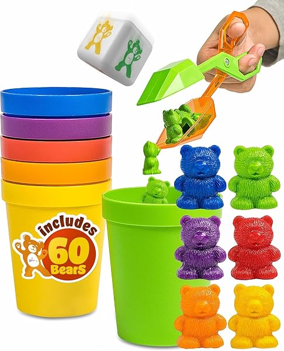
12
Skoolzy Rainbow Counting Bears with Matching Sorting Cups
Sorting · counting · ages 3+ 3+ label
$18.99 · Amazon
60 bears, 6 colored cups, tongs and dice: sorting by color now, counting and simple patterns later, and the tongs work the pinch grip. Sorting is one of Harvard's suggested memory and attention games for this age. Harvard Center on the Developing Child
3+ label: small parts. Skoolzy itself says 2–5 with supervision.
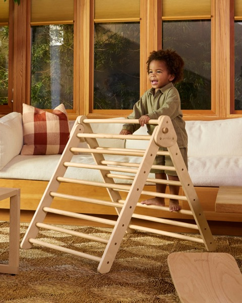
13
Piccalio Climber Pikler Triangle Set
Climbing · body · ages 6 mo–6 y fits now
$349 · piccalio.com
An indoor climbing triangle with a slide and rock-wall ramp, for every day, not just park days. Toddlers with better climbing, running and ball skills score higher on thinking tests. Veldman 2019
Cheaper: Avenlur Hazel foldable triangle with slide, $229. Lily & River, the classic brand, has closed.
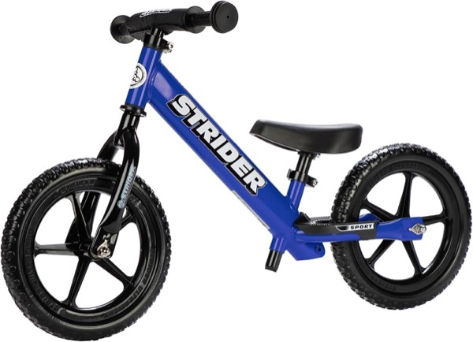
14
Strider 12 Sport Balance Bike
Balance · coordination · ages 18 mo–4 y fits now
$149.99 · Amazon
Trains balance and steering, which his two electric wiggle cars don't. Active play programs for under-5s were linked to better motor and thinking skills in most studies. Carson 2017 review
No brakes: helmet and a grown-up nearby.
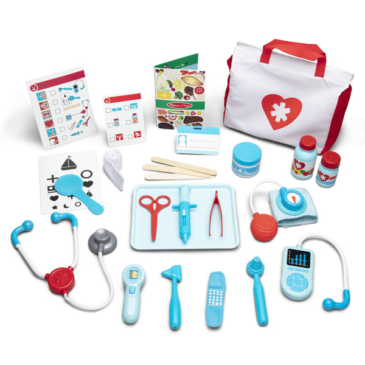
15
Melissa & Doug Get Well Doctor's Kit
Pretend play · ages 3+ 3+ label
$29.97 · Amazon
Pretend play about real life: checkups, shots, a sick teddy, which also helps before his own doctor visits. Pretend play goes with better language, storytelling and handling feelings, though research can't yet say it causes them. Lillard 2013
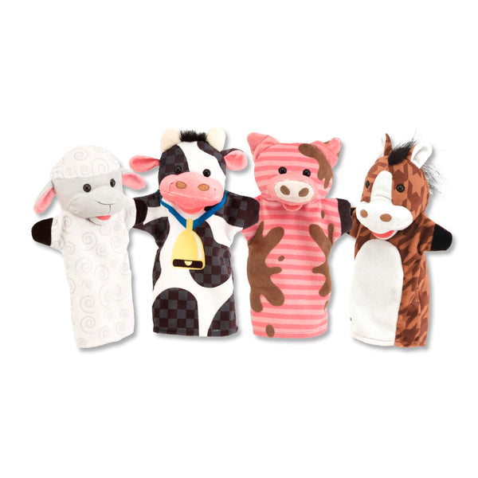
16
Melissa & Doug Farm Friends Hand Puppets (4)
Language · storytelling · ages 2+ fits now
$18.99 · melissaanddoug.com
A cow, horse, sheep and pig to talk, sing and tell stories with, in both languages, and to act out feelings at a safe distance. Harvard's guide lists pretend play the child leads as working-memory practice. Harvard Center on the Developing Child
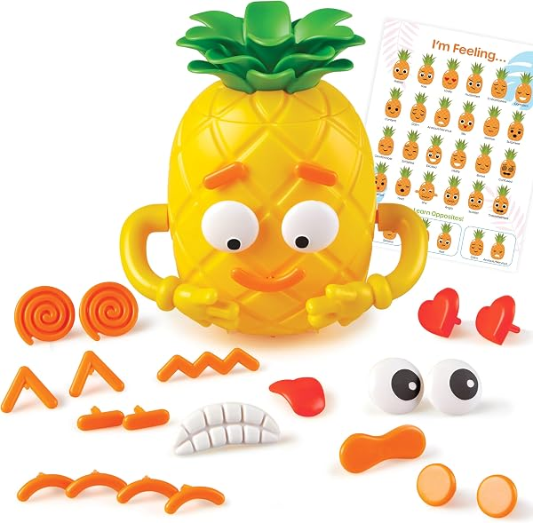
17
Learning Resources Big Feelings Pineapple
Feelings · ages 3+ 3+ label
$9.49 · Amazon
Mix-and-match faces to name feelings ("ты злишься? you're mad?"), the same thing your Montessori Together class is working on. Toddlers with words for feelings learn to talk about them instead of acting them out. Zero to Three
3+ label: small face pieces. The Deluxe set ($18.49) has bigger ones.
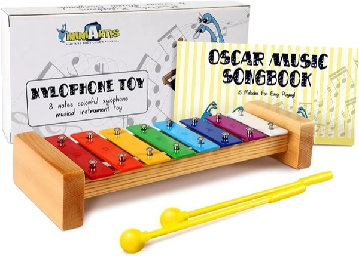
18
MiniArtis Rainbow Melody Xylophone with 15-song songbook
Music · ages 1–3 fits now
$19.97 · Amazon
8 tuned metal bars and a color-coded songbook, so it makes real music, not the button sounds of his DJ table. Making music together may make young kids more cooperative (one later study didn't repeat it). Kirschner & Tomasello 2010
Maker says 1–3; Amazon also shows a 3+ small-parts note.
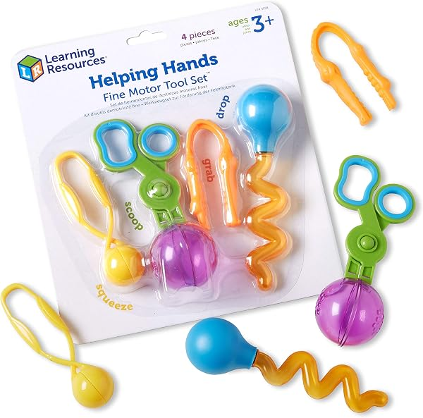
19
Learning Resources Helping Hands Fine Motor Tool Set
Fine motor · ages 3+ 3+ label
$12.97 · Amazon
Tweezers, scoopers and droppers for moving pom-poms, water or pasta from bowl to bowl, the same transfer work Montessori classes use. Hand skill at school entry predicts later achievement. Grissmer 2010
3+ label. Use big items in the bowls; never water beads.
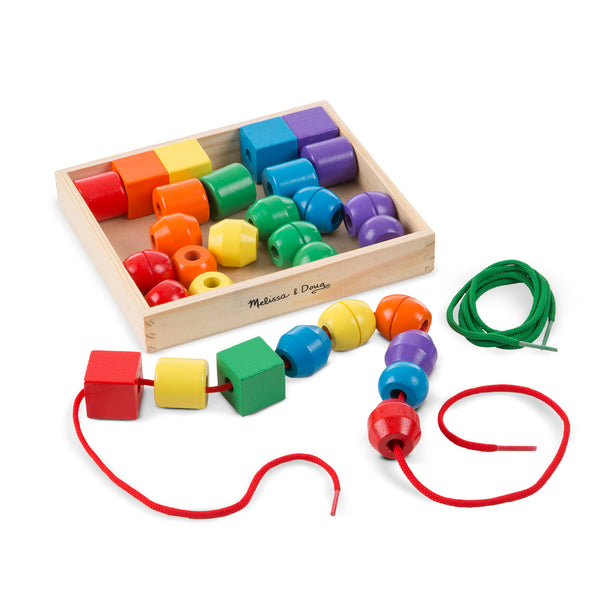
20
Melissa & Doug Primary Lacing Beads
Fine motor · patterns · ages 3–6 3+ label
$13.99 · melissaanddoug.com
30 big wooden beads and 2 laces: hand-eye control, concentration, and first patterns (red, blue, red…). Copying designs with the hands is the part of hand skill that best predicts school success. Cameron 2012